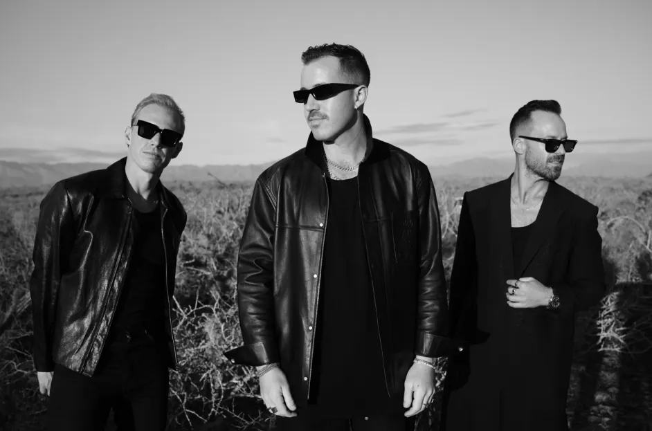

How Liv's Music Taste Has Impacted Me
Liv’s music taste has had a big impact on mine, particularly when it comes to how I experience the emotional side of EDM. I used to focus mostly on lyrics and often overlooked EDM because I thought it was all about the beats. But thanks to Liv, I’ve come to appreciate that the beats and sounds in EDM can carry just as much emotional weight as lyrics. Fred Again’s ability to manipulate lyrics really drew me in, and I’ve learned that the genre’s emotional power goes beyond just the rhythm. RÜFÜS DU SOL’s atmospheric production, for example, has this way of pulling me into a specific emotional space, showing me that sometimes music’s feeling comes from the sounds themselves, not just the words. Liv’s diverse taste has also opened my eyes to how versatile EDM can be, from the high-energy beats of Knock2 to the nostalgic vibes of Disco Lines, helping me see how the genre can match different moods and settings.
Her Favorite Artists
RÜFÜS DU SOL
Illenium
Knock2
Fred again
Disco Lines
Gorgon City
Some Songs that I Love:
Here are a few tracks that I listen to all the time now. These are songs and artist that I would have never discovered or listened to without the influence of my sister on my music taste. I have even seen Fred again in concert with her!